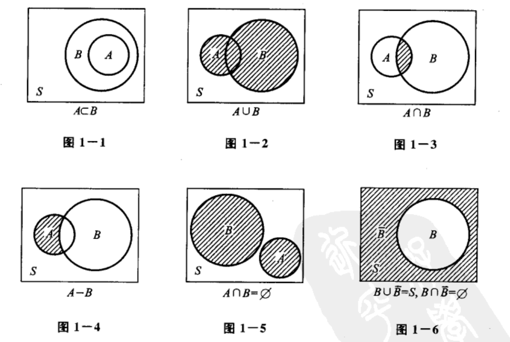
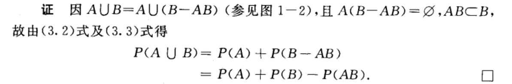
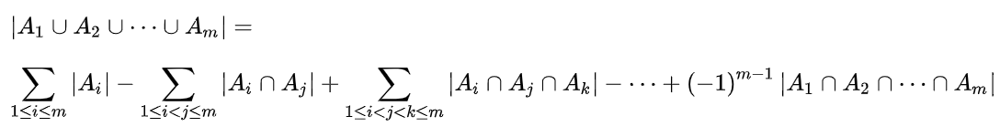
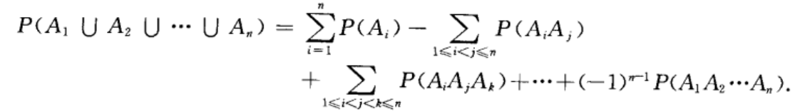
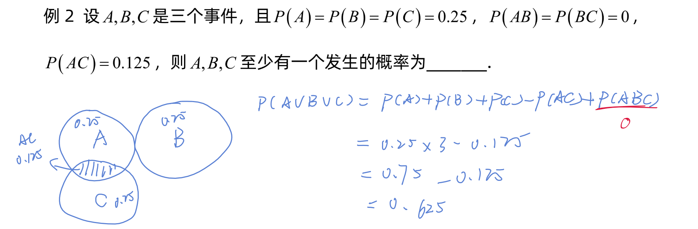

关系

1.包含如果A⊂B且B⊂A，那么A=B
2.和事件当且仅当A,B中至少有一个发生时,事件A∪B发生.
3.积事件当且仅当A,B同时发生时,事件A∩B发生.A∩B也记作AB.
4.差事件当且仅当A发生、B不发生时事件A−B发生. P(ABˉ)=P(A−B)
5.互斥事件A∩B=∅
6.逆事件（对立事件）A∪B=S且A∩B=∅， 那么，这个A的对立事件B被记为 Aˉ=S−A.
性质
有限可加性
若A1,A2,⋯,An是两两互不相容的事件,则有P(A1∪A2∪⋯∪An)=P(A1)+P(A2)+⋯+P(An). 减法公式
设A,B是两个事件,若A⊂B,则有 P(B−A)=P(B)−P(A)P(B)⩾P(A) 加法公式
P(A∪B)=P(A)+P(B)−P(AB) 
推广
在计数时，必须注意没有重复，没有遗漏。为了使重叠部分不被重复计算，人们研究出一种新的计数方法，这种方法的基本思想是：先不考虑重叠的情况，把包含于某内容中的所有对象的数目先计算出来，然后再把计数时重复计算的数目排斥出去，使得计算的结果既无遗漏又无重复，这种计数的方法称为容斥原理。 

